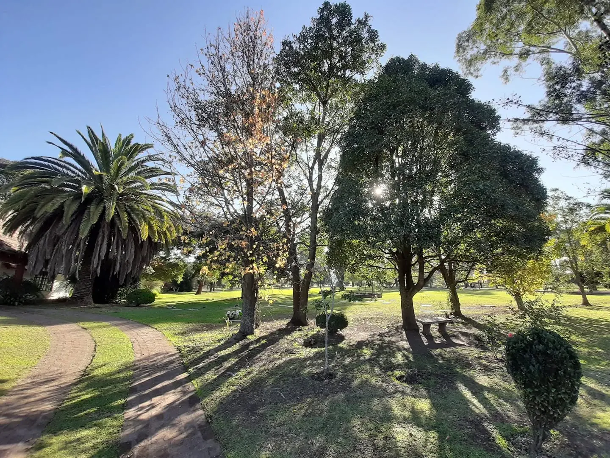
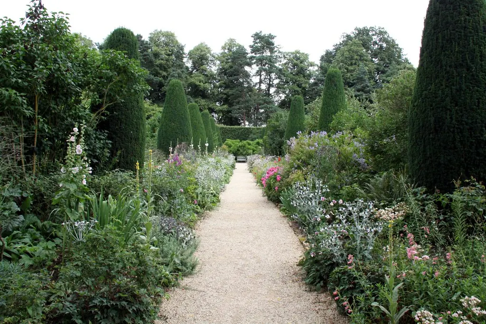

Inhumación en tierra
Parcelas en jardines o sectores del parque.
Parcelas hasta tres ocupaciones. Incluye servicio de inhumación, instalación de placa y floreros, y mantenimiento general.

Cementerio Parque · San Salvador de Jujuy · Desde 1995
Ocho hectáreas de jardines y arboledas sobre la Ruta 9, organizadas desde 1995 para acompañar con serenidad.
Hablar con la administraciónLlamá al teléfono de 24 horas — +54 9 388 488-1158. A partir de esa llamada se informa si la familia cuenta o no con parcela. Si no cuenta, se ofrecen distintas opciones de ubicación y precio.
Contactá a la cochería o casa velatoria. Si la parcela ya fue adquirida previamente, se llama primero a la cochería; si no, el orden es indistinto.
Reuní la documentación. Certificado de inhumación expedido por la Municipalidad de San Salvador de Jujuy, y documentos de propiedad de la parcela en caso de contar con ella. Se presenta antes de la inhumación.
Estos trámites se resuelven de forma personal, por teléfono o en la administración.
Servicios
Parcelas en jardines o sectores del parque.
Parcelas hasta tres ocupaciones. Incluye servicio de inhumación, instalación de placa y floreros, y mantenimiento general.
Depósito de urnas con cenizas.
Servicio de resguardo de urnas cinerarias en caso de cremación.
Acompañamiento el día de la despedida.
Ornamentación de la parcela con alfombras de césped sintético, porta corona y toldilla. Traslado en cureña por parte de los empleados desde el ingreso principal hasta el lugar de la parcela.
Cuidado periódico del espacio.
Las parcelas se mantienen periódicamente a partir del pago de expensas.
Los valores y las opciones de ubicación se informan de forma personal.
Hablar con la administraciónFormas de pago: efectivo, transferencia y débito.

El parque
El cementerio surge de la propiedad rural del Dr. Gustavo Perovic, con el objetivo de desarrollar una empresa de fines sociales para favorecer a la ciudad de San Salvador de Jujuy.
Se buscó crear un predio bien organizado, priorizando el entorno natural y la cercanía a distintos puntos de la ciudad — una condición que el parque mantiene desde 1995.
Conocer el parque en persona es la mejor manera de resolver cualquier duda — coordinar una visita es tan simple como escribir o llamar.
Cómo trabajamos
Una conversación, sin compromiso.
Ubicaciones disponibles, características y valores. Se puede visitar el parque.
Sin apuro. La documentación y el pago se coordinan de forma personal.
No hace falta resolver todo en la primera conversación.
Preguntas frecuentes
Sí. Adquirir una parcela con anticipación es una decisión habitual y no genera ninguna obligación adicional más allá de la parcela en sí. Podés consultar ubicaciones y valores cuando quieras, sin apuro.
Se puede abonar en efectivo, por transferencia o con débito. Las formas de pago y las opciones de financiación se conversan de forma personal con la administración, según cada caso.
El mantenimiento incluye el cuidado periódico del espacio de cada parcela. Se sostiene con el pago de expensas, que se abonan de forma periódica y se informan en la administración.
El certificado de inhumación expedido por la Municipalidad de San Salvador de Jujuy y, si la parcela ya fue adquirida, los documentos que acrediten su propiedad. Se presenta antes de la inhumación.
El parque recibe visitas todos los días, de 8 a 19 h.
Sí, se pueden dejar flores en las parcelas. El personal del parque las retira periódicamente como parte del mantenimiento general.
No, el ingreso de mascotas no está permitido dentro del parque.
Se celebran cuando se solicitan.
Sí. El parque cuenta con acceso para sillas de ruedas en sus caminerías principales.
Día de los Muertos, Día de la Madre, Día del Padre y Navidad; conviene prever demora.
Si tu consulta no está acá, escribinos: te respondemos personalmente.
Contacto